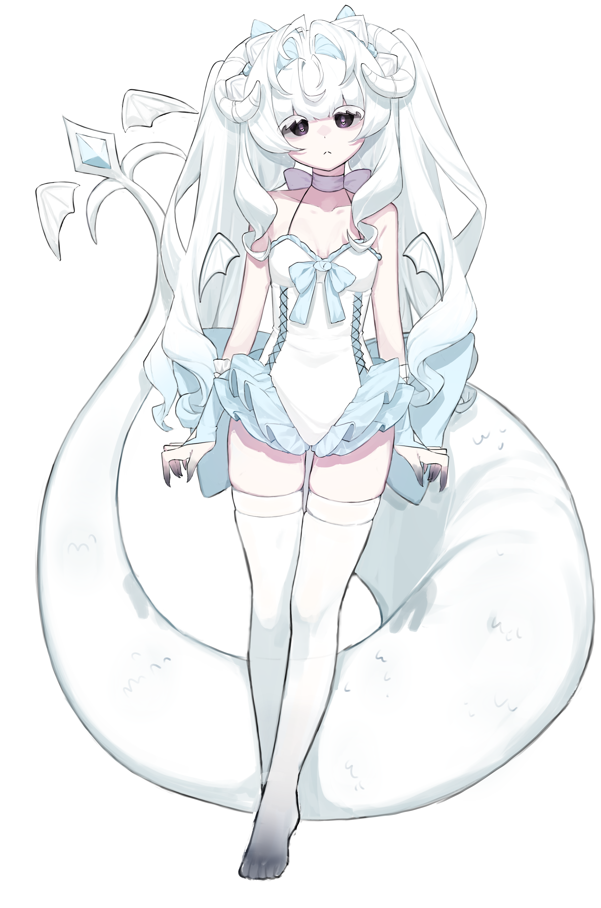

LOADING
...
Xo
X
우타우 1
우타우 2
사용 규약
SYS
--:--:--

폼 전환
フォーム
한국어
日本語
UTAU VOICEBANK · UNIT 02
Reine
零音 レイネ ·
관용 / 몽환
寛容 / 夢幻
▶ DEMO // REINE
이름
名前
零音 レイネ (Reine)
취미
趣味
별 보기 / 얼음 만들기
星を見ること / 氷を作ること
음역
音域
C4 — A4
권장 템포
推奨テンポ
80 – 170 BPM
타입
タイプ
VCV / Graceful
컬러
カラー
#E3F7FF
CV
/ 성우
ねおまる
일러스트
イラスト
koronri
TWITTER ↗
YOUTUBE ↗
DOWNLOAD
음원형식
일본어 VCV / 원음설정
@wb4_3
音源形式
日本語 VCV / 原音設定
@wb4_3
NOTE
어떤 샘플러에서도 잘 작동합니다.
NOTE
どのサンプラーでも問題なく動作します。